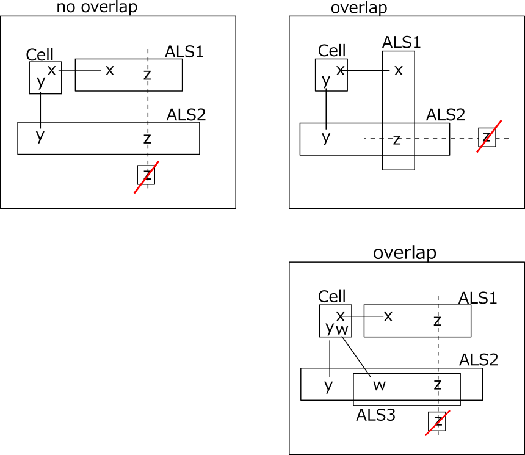
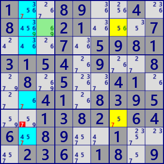
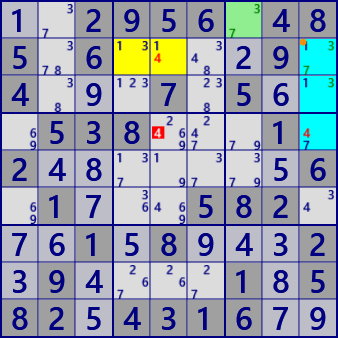

●ALS DeathBlossom(基本形)
DeathBlossomは、妖しげな名前をもつ ALSの配置に基づく解析アルゴリズムです。
DeathBlossomのイメージを示します。
1つのセル(軸セル:StemCell)がn個の候補数字（x,y,w)を持ち、そのそれぞれの数字がn個のALSと強いリンク（セルとALS間のRCC)で繋がっているとします。
また、n個のALSにはRCCとは異なる共通の数字zがあるとします。このとき、ALS内の全てのzをカバーするzがALS外にあれば、ALS外のzは除外できます。
ALS外の数字zが真とすると、全てのALSはLockedSetになり、軸セルの候補数字がなくなるからです。
ALSは重なりなしの場合(左図）と、重なりを許容する場合(右上下）があります。

○ALS DeathBlossomの例です。

ALS Death Blossom
Stem : r2c3 #69
-#6-ALS1 : r27c7 #567
-#9-ALS2 : r12368c2 #345679
eliminated : r7c2 #7

ALS Death Blossom [overlap]
Stem : r1c7 #37
-#7-ALS1 : r2c459 #1347
-#3-ALS2 : r234c9 #1347
eliminated : r4c5 #4
...8...4....21...7...7.5981315..9..8.8....4....41.83.5..1.82.646.8...1...236.18..
..2956.485.6....9.4...7.5...538...1.2.......6.1...582...1.8...2.9....1.582.4316..
○ALS DeathBlossom解析プログラム
DeathBlossomの解析アルゴリズムでは、セル-ALSのリンクを使います。
DeathBlossomの解析は次の手順で行います。
- ALSとセル-ALSのリンクを生成する。
- サイズを決める（sz=2～）。
- 要素数字の数がsz個のセルを選び、軸セルとする。
- 軸セルと連結するALSをsz個組合せにより選ぶ。
- 選択したALS群のRCCが全体として軸セルの要素をカバーし、ALS群の全てに共通数字があることを調べる。
- ALS群の共通数字から着目数字を選ぶ。
- ALS群の着目数字配列(ビット表現）を求める。
- ALS群の外部にあって、ALS群内の全ての着目数字カバーするセルを求める。これが除外可能セル・数字である。
public partial class ALSTechGen: AnalyzerBaseV2{
public bool ALS_DeathBlossom(){
ALSMan.ALS_Search(1);
if( ALSMan.ALSLst==null || ALSMan.ALSLst.Count<=2 ) return false;
ALSMan.Create_Cell2ALS_Link();
for( int sz=2; sz<=4; sz++ ){
if( _ALS_DeathBlossomSub(sz) ) return true;
}
return false;
}
private bool _ALS_DeathBlossomSub( int sz ){
foreach( var SC in pBDL.Where(p=>p.FreeBC==sz) ){ //Stem Cell
if(AnMan.CheckTimeOut()) return false;
List<LinkCellAls> LinkCeAlsLst=ALSMan.LinkCeAlsLst[SC.rc];
if( LinkCeAlsLst==null || LinkCeAlsLst.Count<sz ) continue;
int nxt=0, PFreeB=SC.FreeB;
var cmb=new Combination(LinkCeAlsLst.Count,sz);
while(cmb.Successor(nxt)){
int FreeB=SC.FreeB, AFreeB=0x1FF;
for( int k=0; k<sz; k++ ){
nxt=k;
var LK=LinkCeAlsLst[cmb.Cmb[k]]; //Link[cell-ALS]
if( (FreeB&(1<<LK.nRCC))==0 ) goto LNxtCmb;
FreeB = FreeB.BitReset(LK.nRCC);
AFreeB &= LK.ALS.FreeB;
}
if( FreeB!=0 || AFreeB==0 ) continue;
AFreeB = AFreeB.DifSet(SC.FreeB);
foreach( var no in AFreeB.IEGet_BtoNo() ){
int noB=(1<<no);
Bit81 Ez=new Bit81();
for( int k=0; k<sz; k++ ){
var ALS=LinkCeAlsLst[cmb.Cmb[k]].ALS;
var UClst=ALS.UCellLst;
foreach( var P in UClst.Where(p=>(p.FreeB&noB)>0) ) Ez.BPSet(P.rc);
}
foreach( var P in pBDL.Where(p=>(p.FreeB&noB)>0) ){
if( (Ez-ConnectedCells[P.rc]).IsZero() ){ P.CancelB=noB; SolCode=2; }
}
if(SolCode<1) continue;
var LKCAsol=new List<LinkCellAls>();
Array.ForEach(cmb.Cmb,nx=> LKCAsol.Add(LinkCeAlsLst[nx]) );
_DeathBlossom_SolResult(LKCAsol,SC,no);
if( !AnMan.SnapSaveGP(true) ) return true;
//foreach( var E in pBDL ) E.CancelB=0;
}
LNxtCmb:
continue;
}
}
return false;
}
private void _DeathBlossom_SolResult( List<LinkCellAls> LKCAsol, UCell SC, int no ){
string st0 = "ALS Death Blossom";
Color cr = _ColorsLst[0];////Colors.Gold;
SC.SetNoBBgColor(SC.FreeB,AttCr3,cr);
string st = "\r Cell r"+(SC.r+1)+"c"+(SC.c+1) + " #"+SC.FreeB.ToBitStringNZ(9);
bool Overlap=false;
Bit81 OV=new Bit81();
int k=0, noB=(1<<no);
foreach( var LK in LKCAsol ){
int noB2=1<<LK.nRCC;
cr = _ColorsLst[++k];
LK.ALS.UCellLst.ForEach( P=> {
P.SetNoBBgColor(noB,AttCr,cr);
P.SetNoBBgColor(noB2,AttCr3,cr);
if( OV.IsHit(P.rc) ) Overlap=true;
OV.BPSet(P.rc);
} );
st += "\r -#"+(LK.nRCC+1)+"-ALS"+k+" "+LK.ALS.ToStringRCN();
}
if(Overlap) st0+=" [overlapping]";
Result = st0;
if( SolInfoDsp ) ResultLong=st0+st;
}
}